CS254 Visual Programming · Lecture 1 + Lab 1
Object Oriented Programming with Java
Every slide of Lecture 1-OOP and both pages of Lab 1: OOP, in order: text, code, diagrams, screenshots and photos. Each topic opens with a plain-language explanation and ends with the original slides and a short self-check.
Slides 1, 3
Concepts of OOP
Object Oriented Programming with Java 1
Concepts of OOP 3
- Objects
- Classes
- Data Abstraction
- Encapsulation
- Inheritance
- Polymorphism
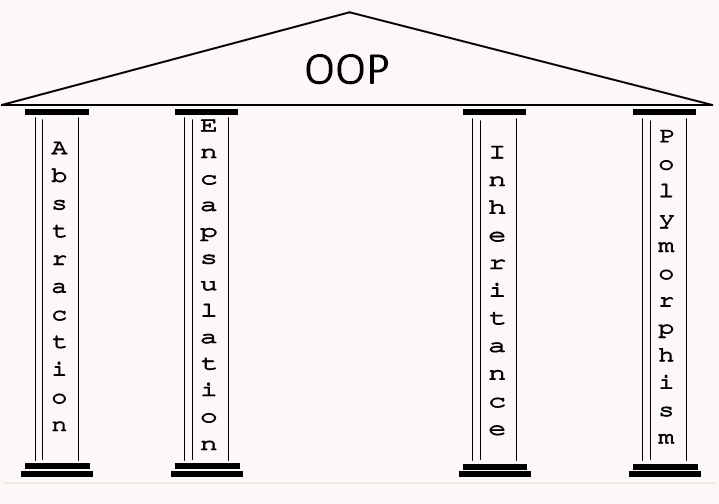
Slides 4–6
Objects and Classes
What is an Objects? 4
- Object is a software bundle of related state and behavior
- Characteristics:
- state and behavior
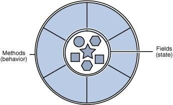
What is a class? 5
- A Java class is a group of Java methods and variables
- Object is an instance of a class
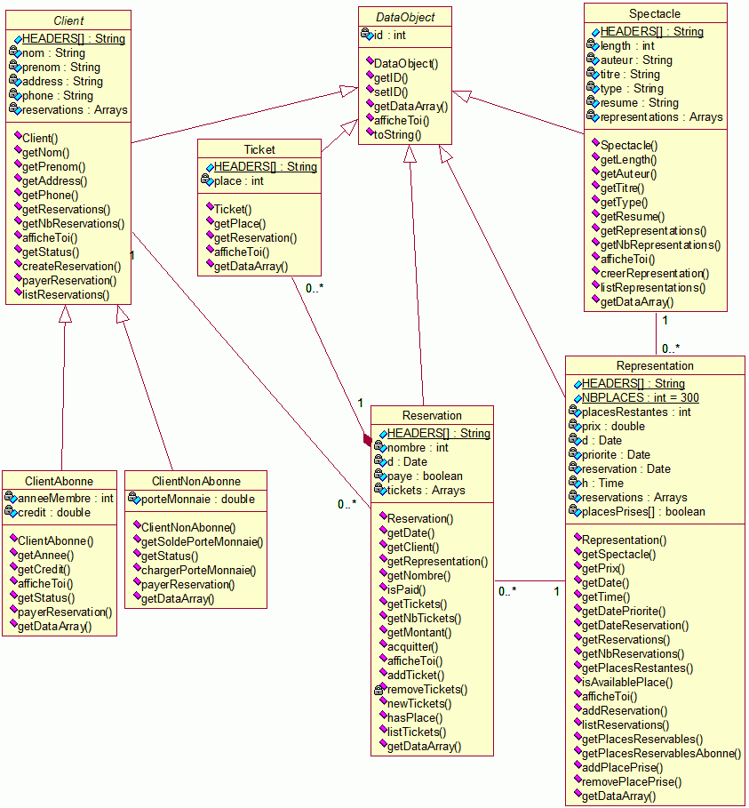
Object Oriented Concepts 6
Slides 7–8
Constructors
Constructors 7
- You can create multiple constructors, each must accept different parameters.
- If you don't write any constructor, the compiler will (in effect) write one for you:
classname() {} - If you include any constructors in a class, the compiler will not create a default constructor!
Multiple Constructors 8
- One constructor can call another.
- You use "this", not the classname:
class Foo {
int i;
Foo() {
this(0);
}
Foo( int x ) {
i = x;
}
}A call to this must be the first statement in the constructor!
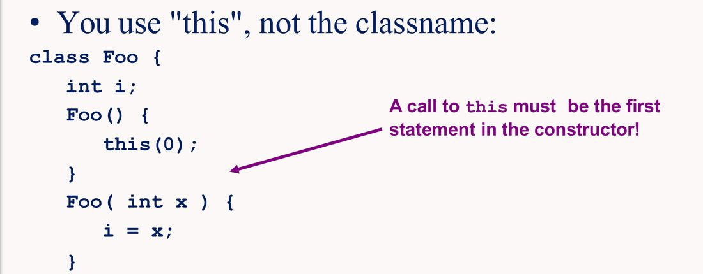
this(0);.Slides 10–26
Modifiers and Overloading
Class Modifiers 10
- Public
- Abstract
- Final
- Default (none)
Class Modifiers 11
- public: anyone can create an object of the defined class.
- only one public class per file, must have same name as the file (this is how Java finds it!).
- default: is non-public (if you don't specify "public").
Class Modifiers 12
- Abstract: modifier means that the class can be used as a superclass only.
- no objects of this class can be created.
- Final: if its definition is complete and no subclasses are desired or required
- a final class never has any subclasses, the methods of a final class are never overridden
Field Modifiers 13
- public
- protected
- private
- none or package or default
- Static
- Final
Field Modifiers 14
public: any method (in any class) can access the field.protected: any method in the same package can access the field, or any derived class.private: only methods in the class can access the field.Default: is that only methods in the same package can access the field.
Field Modifiers 15
Static: Fields declaredstaticare called class fields (class variables). others are called instance fields. There is only one copy of a static field, no matter how many objects are created.Final: class and instance variables (static and non-static fields) may be declared final. The keywordfinalmeans: once the value is set, it can never be changedstatic final int BUFSIZE=100;final double PI=3.14159;
Method Modifiers 16
- public
- protected
- none or package or default
- private
- final
- abstract
- static
- native
- synchronized
Method Modifiers 17
private/protected/public:- same idea as with fields.
abstract: no implementation given, must be supplied by subclass.- the class itself must also be declared
abstract
- the class itself must also be declared
Method Modifiers 18
static: the method is a class method, it doesn't depend on any instance fields or methods, and can be called without first creating an object.final: the method cannot be changed by a subclass (no alternative implementation can be provided by a subclass).
Method Modifiers 19
native: the method is written in some local code (C/C++) - the implementation is not provided in Java.synchronized: only one thread at a time can call the method.
Method Overloading 20
- You can overload methods:
- same method name, different parameters.
- you can't just change return type, the parameters need to be different.
- Method overloading is resolved at compile time.
int CounterValue() {
return counter;
}
double CounterValue() {
return (double) counter;
}Won't Work!
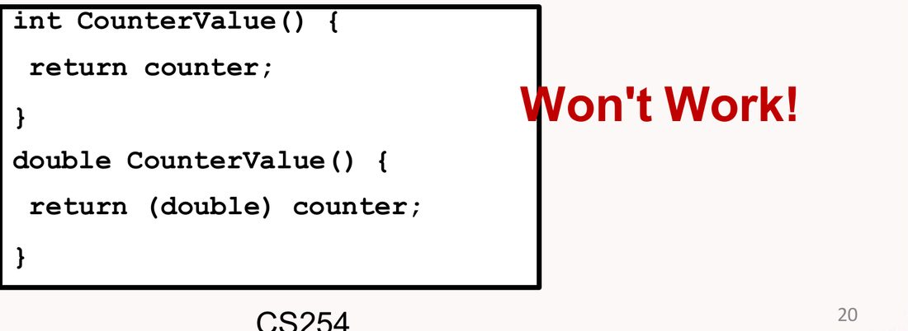
Java Modifier Summary 22–26
All five summary slides combined into one table. Filter by what the modifier is used on.
| Modifier | Used on | Meaning | Slide |
|---|---|---|---|
| abstract | Class | Contains unimplemented methods and cannot be instantiated | 22 |
| abstract | interface | All interfaces are abstract. Optional in declarations | 22 |
| abstract | method | No body, only signature. The enclosing class is abstract | 22 |
| final | Class | Cannot be subclassed | 23 |
| final | method | Cannot be overridden and dynamically looked up | 23 |
| final | field | Cannot change its value. static final fields are compile-time constants. | 23 |
| final | variable | Cannot change its value. | 23 |
| native | method | Platform-dependent. No body, only signature | 24 |
| private | member | Accessible only in its class | 24 |
| protected | member | Accessible only within its package and its subclasses | 24 |
| None | Class | Accessible only in its package | 25 |
| None | Interface | Accessible only in its package | 25 |
| None | Member | Accessible only in its package | 25 |
| public | Class | Accessible anywhere | 26 |
| public | interface | Accessible anywhere | 26 |
| public | Member | Accessible anywhere. | 26 |
Added · Access levels at a glance (built from slides 14 and 24–26)
| Member is… | Same class | Same package | Subclass (other package) | Anywhere |
|---|---|---|---|---|
| public | ✓ | ✓ | ✓ | ✓ |
| protected | ✓ | ✓ | ✓ | – |
| default (none) | ✓ | ✓ | – | – |
| private | ✓ | – | – | – |
Slides 28–32
Packages
Packages 28
Package 29
- defined as a grouping of related types
- existing packages in Java are:
- java.lang - bundles the fundamental classes
- java.io - classes for input , output functions are bundled in this package
Creating a Package 30
- Put a package statement with the package name
- At the top of every source file that contains the classes, interfaces, enumerations, and annotation types that you want to include in the package
- The package statement should be the first line in the source file
- There can be only one package statement in each source file, and it applies to all types in the file
Example 31
/* File name : Animal.java */
package animals;
interface Animal
{
public void eat();
}package animals;
/* File name : MammalInt.java */
public class Mammal implements Animal
{
public void eat()
{
System.out.println("Mammal eats");
}Now you compile these two files and put them in a sub-directory called animals
The Import Keyword 32
- If a class wants to use another class in the same package, the package name does not need to be used. Classes in the same package find each other without any special syntax
- The fully qualified name of the class can be used.
- import
animals.Mamal
- import
- The package can be imported using the import keyword and the wild card (*)
- import
animals.*;
- import
Slides 33–43
Abstraction
Abstraction 33
Abstraction 34
- Refers to the ability to make a class abstract in OOP
- Abstract class
- Cannot be instantiated
- Other functionality of the class still exists
- Cannot create an instance of the abstract class
Abstract Class 35
- Use the abstract keyword to declare a class abstract
public abstract class Employee
{
private String name;
private String address;
...
}Cannot use
Employee e = new Employee();
Compiler outputEmployee.java: xx: Employee is abstract; cannot be instantiated
Employee e = new Employee();
^ 1 error
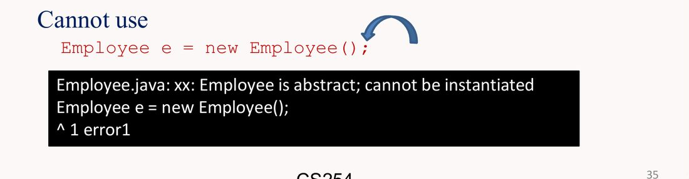
new Employee().Extending Abstract Class 36
public class Salary extends Employee
{
private double salary;
Salary(String name, String address,
int number, double salary)
{
super(name, address, number);
setSalary(salary);
}
...
}extends Employee → Extend Employee class
super(name, address, number); → Call Employee class
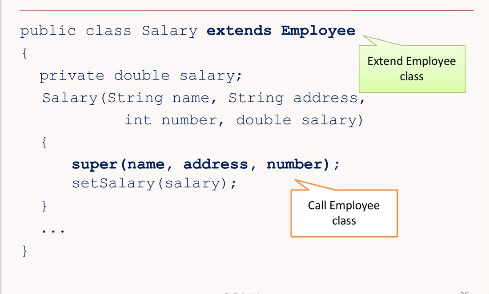
Abstract Methods 37
- Can declare the method in the parent class as abstract
- Abstract methods consist of a method signature, but no method body
public abstract class Employee
{
private String name;
private String address;
private int number;
public abstract double computePay();
//Remainder of class definition
}Declaring a Method as Abstract 38
- The class must also be declared abstract
- Any child class must either override the abstract method or declare itself abstract
- A child class that inherits an abstract method must override it
- If they do not, they must be abstract,and any of their children must override it
Salary is Extending Employee class 39
- it is required to implement computePay() method
public class Salary extends Employee
{
private double salary; //Annual salary
public double computePay()
{
System.out.println("Computing " + getName());
return salary/52;
}
//Remainder of class definition
}Full example 40–43
Employee.java 40–41
/* File name : Employee.java */
public abstract class Employee
{
private String name;
private String address;
private int number;
public Employee(String name, String address, int number)
{
System.out.println("Constructing an Employee");
this.name = name;
this.address = address;
this.number = number;
}
public double computePay()
{
System.out.println("Inside Employee computePay");
return 0.0;
}
public void mailCheck()
{
System.out.println("Mailing a check to " + this.name
+ " " + this.address);
}
public String toString()
{
return name + " " + address + " " + number;
}
public String getName()
{
return name;
}
public String getAddress()
{
return address;
}
public void setAddress(String newAddress)
{
address = newAddress;
}
public int getNumber()
{
return number;
}
}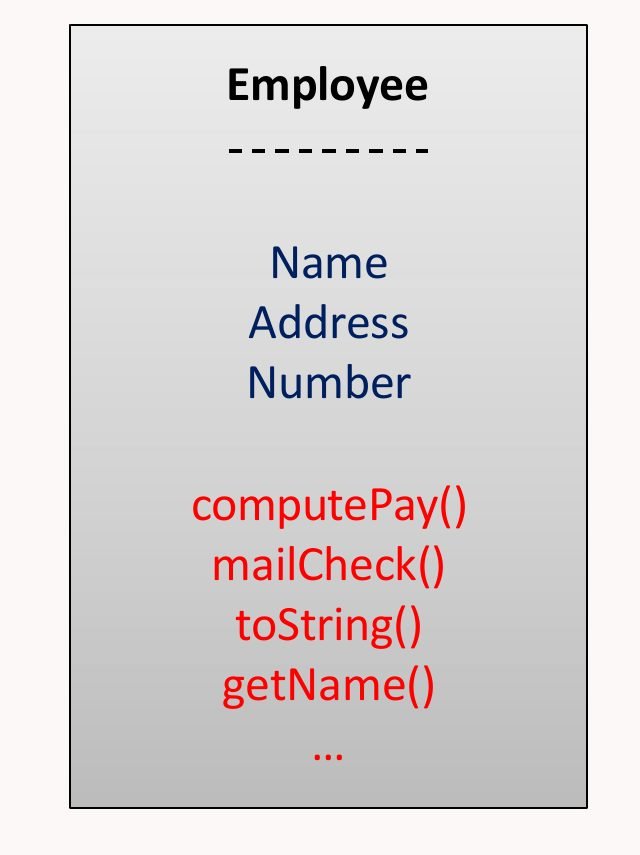
Salary class 42
/* File name : Salary.java */
public class Salary extends Employee
{
private double salary; //Annual salary
public Salary(String name, String address, int number, double
salary)
{
super(name, address, number);
setSalary(salary);
}
public void mailCheck()
{
System.out.println("Within mailCheck of Salary class ");
System.out.println("Mailing check to " + getName()
+ " with salary " + salary);
}
public double getSalary()
{
return salary;
}
public void setSalary(double newSalary)
{
if(newSalary >= 0.0)
{
salary = newSalary;
}
}
public double computePay()
{
System.out.println("Computing salary pay for " + getName());
return salary/52;
}
}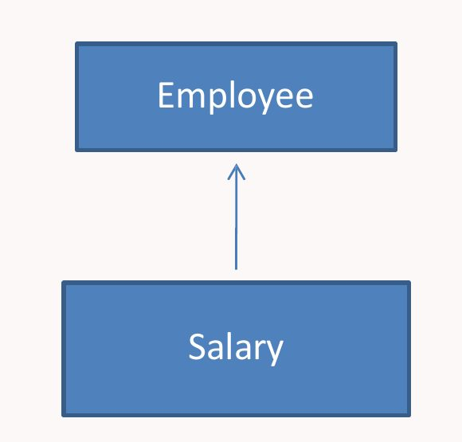
Abstract Demonstration 43
public class AbstractDemo1
{
public static void main(String [] args)
{
Salary s = new Salary("Saman Kumara", "Panadura Rd, Panadura", 3, 3600.00);
Salary e = new Salary("S. K. Silva", "No 234, Nugegoda", 2, 2400.00);
s.computePay();
e.computePay();
System.out.println("Call mailCheck using Salary reference :");
s.mailCheck();
System.out.println("\n Call mailCheck using Employee reference : ");
e.mailCheck();
}
}C:\Windows\system32\cmd.exeConstructing an Employee
Constructing an Employee
Computing salary pay for Saman Kumara
Computing salary pay for S. K. Silva
Call mailCheck using Salary reference :
Within mailCheck of Salary class
Mailing check to Saman Kumara with salary 3600.0
Call mailCheck using Employee reference :
Within mailCheck of Salary class
Mailing check to S. K. Silva with salary 2400.0
Press any key to continue . . .
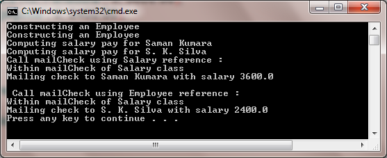
Slides 44–49
Encapsulation
Encapsulation 44
Encapsulation 45
- Information Hiding.
- Don't need to know how some component is implemented to use it.
- Implementation can change without effecting any calling code.
- "protects us from ourselves"
Encapsulation 46
- is the technique of making the fields in a class private and providing access to the fields via public methods
- is also referred to as data hiding
- Benefit
- is the ability to modify our implemented code without breaking the code of others who use our code
- Encapsulation gives maintainability, flexibility and extensibility to our code
Example 47
public class Encap
{
private String name;
private String idNum;
private int age;
public int getAge()
{
return age;
}
public String getName()
{
return name;
}
public String getIdNum()
{
return idNum;
}
public void setAge( int newAge)
{
age = newAge;
}
public void setName(String newName)
{
name = newName;
}
public void setIdNum( String newId)
{
idNum = newId;
}
}Example 48
public class RunEncap
{
public static void main(String args[])
{
EncapTest encap = new EncapTest();
encap.setName("James");
encap.setAge(20);
encap.setIdNum("12343ms");
System.out.println("Name : " + encap.getName()+ " Age : "+ encap.getAge());
}
}C:\Windows\system32\cmd.exeName : James Age : 20
Press any key to continue . . .
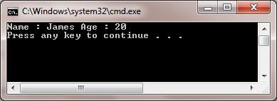
Benefits of Encapsulation: 49
- The fields of a class can be made read-only or write-only.
- A class can have total control over what is stored in its fields.
- The users of a class do not know how the class stores its data. A class can change the data type of a field, and users of the class do not need to change any of their code.
Slides 50–65
Inheritance, IS-A, HAS-A
Inheritance 50
Inheritance 51
- On the surface, inheritance is a code re-use issue.
- we can extend code that is already written in a manageable manner.
- Inheritance is more, it supports polymorphism at the language level!
- Information is made manageable in a hierarchical order
Inheritance cont. 52
- With Inheritance, new class can be derived from existing classes as a building block
- New class Inherit properties and methods from the existing class
- New class can also added Its own properties and methods
- Keyword
- Extends
- Implements
Inheritance cont. 53
- Take an existing object type (collection of fields and methods) and extend it.
- create a special version of the code without re-writing any of the existing code (or even explicitly calling it!).
- End result is a more specific object type, called the sub-class / derived class / child class.
- The original code is called the super class / parent class / base class.
IS-A Relationship (Example) 54
public class Animal
{
}
public class Mammal extends Animal
{ }
public class Reptile extends Animal
{ }
public class Dog extends Mammal
{ }IS-A Relationship (Example) 55
public class Dog extends Mammal
{
public static void main(String args[])
{
Animal a = new Animal();
Reptile r = new Reptile();
Mammal m = new Mammal();
Dog d = new Dog();
System.out.println(m instanceof Animal);
System.out.println(d instanceof Mammal);
System.out.println(d instanceof Animal);
}
}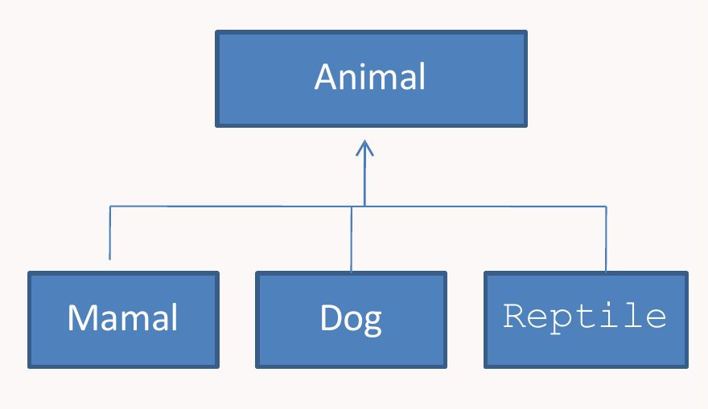
Added · Output when you run it
true true true
IS-A Relationship 56
- In Object Oriented terms following are true:
- Animal is the superclass of Mammal class.
- Animal is the superclass of Reptile class.
- Mammal and Reptile are sub classes of Animal class.
- Dog is the subclass of both Mammal and Animal classes.
IS-A Relationship 57
- IS-A relationship we can say:
- Mammal IS-A Animal
- Reptile IS-A Animal
- Dog IS-A Mammal
- Hence : Dog IS-A Animal as well
- Use of the extends keyword the subclasses will be able to inherit all the properties of the superclass except for the private properties of the superclass
Accessing superclass methods 58
- Can use
super()to access all (non-private) superclass methods.- even those replaced with new versions in the derived class.
- Can use
super()to call base class constructor.
Single Inheritance 59
- You can't extend more than one class!
- the derived class can't have more than one base class.
- You can do multiple inheritance with interface inheritance.
Inheritance Example cont. 60
- Employee: name, email, phone
- FulltimeEmployee: also has salary, office, benefits, …
- Manager: CompanyCar, can change salaries, rates contracts, offices, etc.
- Contractor: HourlyRate, ContractDuration, …
- FulltimeEmployee: also has salary, office, benefits, …
- A manager a special kind of FullTimeEmployee, which is a special kind of Employee.
- The relationship modeled by inheritance is often referred to as a "is a" relationship
Inheritance Example 61
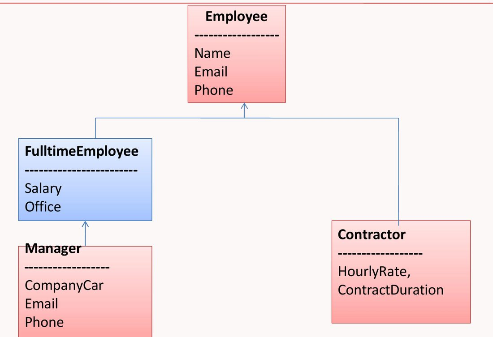
Inheritance Example 62
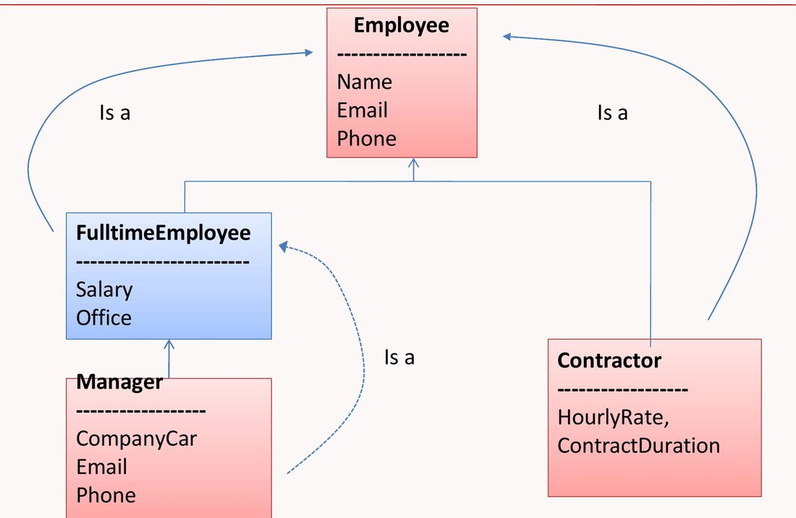
Inheritance Example 63
- Manager is a full time employee
- Full time employee is a employee
HAS-A Relationship 64
- relationships are mainly based on the usage
- determines whether a certain class HAS-A certain thing
- helps to reduce duplication of code as well as bugs
Example 65
public class Vehicle
{}
public class Speed
{}
public class Van extends Vehicle
{
private Speed sp;
}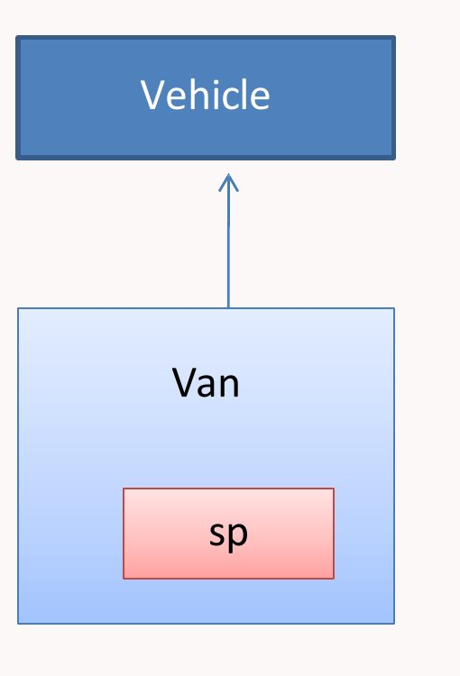
sp (a Speed).- class Van HAS-A Speed
- Reuse the Speed class in multiple applications
Slides 66–77
Interfaces and instanceof
Interface 66
Interfaces 67
- is a collection of abstract methods
- An interface is not a class
- A class describes the attributes and behaviors of an object
- An interface contains behaviors that a class implements
Interfaces cont. 68
- Interfaces have the following properties:
- An interface is implicitly abstract. You do not need to use the abstract keyword when declaring an interface.
- Methods in an interface are implicitly public.
Interfaces cont. 69
- An interface is a definition of method prototypes and possibly some constants (static final fields).
- An interface does not include the implementation of any methods, it just defines a set of methods that could be implemented.
Implement an interfaces 70
- A class can
implementan interface, this means that it provides implementations for all the methods in the interface. - Java classes can implement any number of interfaces (multiple interface inheritance).
Interfaces 71
- Creation (definition) of interfaces can be done using inheritance:
- one interface can extend another.
- Sometimes interfaces are used just as labeling mechanisms:
- Look in the Java API documentation for interfaces like
Cloneable.
- Look in the Java API documentation for interfaces like
Interfaces 72
- An interface is similar to a class in the following ways:
- An interface can contain any number of methods.
- An interface is written in a file with a .java extension, with the name of the interface matching the name of the file.
- The bytecode of an interface appears in a .class file.
- Interfaces appear in packages, and their corresponding bytecode file must be in a directory structure that matches the package name.
Interfaces 73
- An interface is different from a class in several ways, including:
- You cannot instantiate an interface.
- An interface does not contain any constructors.
- All of the methods in an interface are abstract.
- An interface cannot contain instance fields. The only fields that can appear in an interface must be declared both static and final.
- An interface is not extended by a class; it is implemented by a class.
- An interface can extend multiple interfaces.
Declaring Interfaces 74
- The interface keyword is used to declare an interface
interface Animal
{
public void eat();
}public class MammalInt implements Animal
{
public void eat()
{
System.out.println("Mammal eats");
}
public static void main(String args[])
{
MammalInt m = new MammalInt();
m.eat();
}
}Added · Output
Mammal eats
Extending Interfaces 75
- An interface can extend another interface
public interface Sports
{
public void setHomeTeam(String name);
}
public interface Football extends Sports
{
public void homeTeamScored(int points);
}
public interface Hockey extends Sports
{
public void homeGoalScored();
}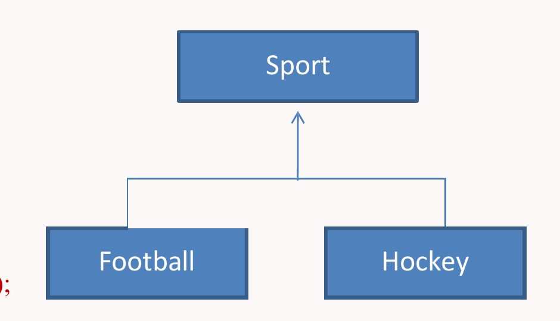
Multiple Interfaces 76
- A Java class can only extend one parent class.
- Multiple inheritance is not allowed
- An interface can extend more than one parent interface
- Extends keyword is used once, and the parent interfaces are declared in a comma-separated list.
public interface Hockey extends Sports, Event
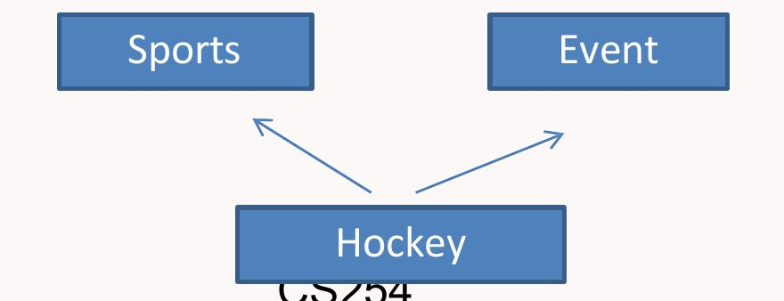
The "instanceof" Keyword 77
- the instanceof operator to check determine whether Mammal is actually an Animal, and dog is actually an Animal
interface Animal{}
class Mammal implements Animal{}
class Dog extends Mammal{
public static void main(String args[]){
Mammal m = new Mammal();
Dog d = new Dog();
System.out.println(m instanceof Animal);
System.out.println(d instanceof Mammal);
System.out.println(d instanceof Animal);
}
}Added · Output
true true true
Slides 78–84
Polymorphism
Polymorphism 78
Polymorphism 79
- is the ability of an object to take on many forms
- OOP occurs when a parent class reference is used to refer to a child class object
Polymorphism 80
- Create code that deals with general object types, without the need to know what specific type each object is.
- Generate a list of employee names:
- all objects derived from Employee have a name field!
- no need to treat managers differently from anyone else.
Polymorphism 81
- The real power comes with methods/behaviors.
- A better example:
- shape object types used by a drawing program.
- we want to be able to handle any kind of shape someone wants to code (in the future).
- we want to be able to write code now that can deal with shape objects (without knowing what they are!).
Example 82
public interface Vegetarian {}
public class Animal {}
public class Deer extends Animal implements Vegetarian {}- Deer class is considered to be polymorphic since this has multiple inheritance
- A Deer IS-A Animal
- A Deer IS-A Vegetarian
- A Deer IS-A Deer
- A Deer IS-A Object
Types of Polymorphism 83
- Overloading
- Overriding
- Dynamic method binding
Example 84
public static void main ( String ary[ ] )
{
Box x;
Box b1 =new Box( );
WoddenBox wb=new WoddenBox( );
SteelBox s1=new SteelBox( );
LargeWoddenBox p1=new LargeWoddenBox( );
b1.info( );
wb.info( );
s1.info( );
p1.info( );
System.out.println("-----------------------");
Box b[]=new Box[5];
b[1]=new Box();
b[2]=new WoddenBox();
b[3]=new SteelBox();
b[4]=new LargeWoddenBox();
for(int i=1;i<5;i++)
b[i].info();
}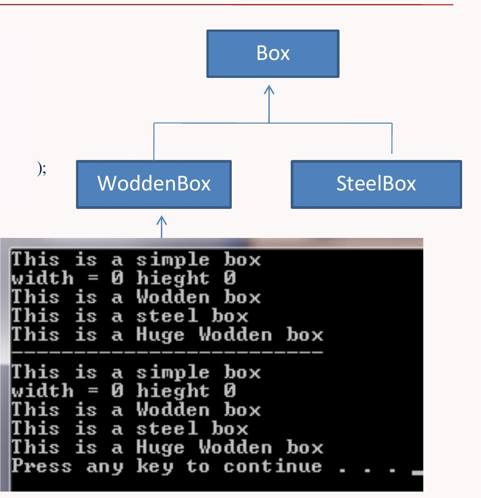
Console output (from the slide)This is a simple box
width = 0 hieght 0
This is a Wodden box
This is a steel box
This is a Huge Wodden box
-----------------------
This is a simple box
width = 0 hieght 0
This is a Wodden box
This is a steel box
This is a Huge Wodden box
Press any key to continue . . .
The second half prints exactly the same lines as the first, even though every element of b[] is a Box reference. Java picks each object's own info() at run time: that is dynamic method binding.
Added · One version of the Box classes that produces this output
The slide doesn't show the classes. This is a minimal set that matches the diagram and the output, so you can run the example.
class Box {
int width, height;
void info() {
System.out.println("This is a simple box");
System.out.println("width = " + width + " hieght " + height);
}
}
class WoddenBox extends Box {
void info() { // overrides Box.info()
System.out.println("This is a Wodden box");
}
}
class SteelBox extends Box {
void info() {
System.out.println("This is a steel box");
}
}
class LargeWoddenBox extends WoddenBox {
void info() {
System.out.println("This is a Huge Wodden box");
}
}Lab 1 · Abualhaj, Amer · 2 pages
Lab 1: OOP
Definitions p. 1–2
| # | Term | Lab definition |
|---|---|---|
| 1 | Class | A class is a blueprint or template for creating objects. It defines the attributes (data) and methods (functions) that describe a type of object. |
| 2 | Object | An object is an instance of a class. It represents a specific example with its own values for the class's attributes. |
| 3 | Constructor | A constructor is a special method used to initialize an object when it is created. It usually has the same name as the class and no return type. |
| 4 | Static | A static variable or method belongs to the class itself, not to individual objects. It can be accessed without creating an object. |
| 5 | Encapsulation | Encapsulation is the concept of hiding internal details of a class and protecting its data from direct access. This is done using private attributes and public getter/setter methods. |
| 6 | Polymorphism | Polymorphism means "many forms." It allows the same method name to behave differently based on the object that calls it. |
| 7 | Abstraction | Abstraction means showing only the necessary details and hiding the complex implementation. It can be achieved using abstract classes or interfaces. |
| 8 | Final | The final keyword is used to declare constants, prevent method overriding, or inheritance. |
Task Requirements p. 2
- Implement all classes using the UML diagram.
- Use constructors in each class to initialize attributes.
- Demonstrate inheritance and method overriding with printInfo().
- Create a small main program to:
- Create an Employee object and a Student object.
- Call their printInfo() methods.
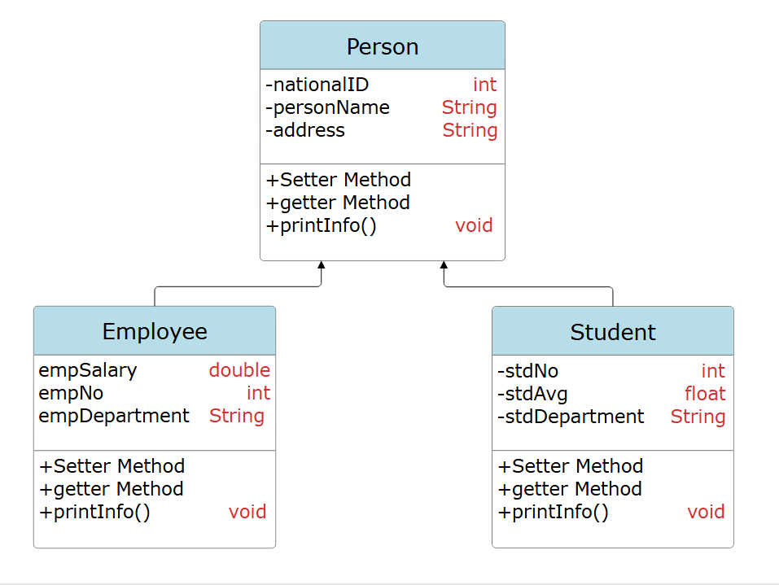
| Class | Attributes (type) | Methods |
|---|---|---|
| Person | -nationalID (int) -personName (String) -address (String) | +Setter Method +getter Method +printInfo() : void |
| Employee extends Person | empSalary (double) empNo (int) empDepartment (String) | +Setter Method +getter Method +printInfo() : void |
| Student extends Person | -stdNo (int) -stdAvg (float) -stdDepartment (String) | +Setter Method +getter Method +printInfo() : void |
Your answer · Lab1.zip
Your Lab 1 answer
NetBeans Maven project mavenproject7, package com.mycompany.mavenproject7, four files. The main class is Mavenproject7 (NetBeans names it after the project), so F6 runs it. The code below is exactly as in your zip.
package com.mycompany.mavenproject7;
public class Person {
private int nationalID;
private String personName;
private String address;
public Person(int nationalID, String personName, String address) {
this.nationalID = nationalID;
this.personName = personName;
this.address = address;
}
public int getNationalID() {
return nationalID;
}
public String getPersonName() {
return personName;
}
public String getAddress() {
return address;
}
public void setNationalID(int nationalID) {
this.nationalID = nationalID;
}
public void setPersonName(String personName) {
this.personName = personName;
}
public void setAddress(String address) {
this.address = address;
}
public void printinfo(){
System.out.println("NationalID = "+nationalID +"\n"+"PersonName = "+ personName +"\n" +"Address = "+ address);
}
}Person.java, explained
private int nationalID; private String personName; private String address;
- The three attributes from the UML. They're
private(the-in the UML), so other classes can only reach them through the getters and setters. That's encapsulation (definition 5). public Person(int nationalID, String personName, String address) { this.nationalID = nationalID; ...- The constructor: it runs when you write
new Person(...)(or when a subclass callssuper(...)). The parameters have the same names as the fields, sothis.nationalIDmeans the field and plainnationalIDmeans the parameter. public int getNationalID() { return nationalID; }- A getter returns a field's value. There is one per field.
public void setNationalID(int nationalID) { this.nationalID = nationalID; }- A setter changes a field's value. There is one per field.
public void printinfo(){ System.out.println("NationalID = "+nationalID +"\n"+"PersonName = "+ personName +"\n" +"Address = "+ address); }- Prints the three values.
"\n"inside a String starts a new line, so this oneprintlnprints three lines.
/*
* Click nbfs://nbhost/SystemFileSystem/Templates/Licenses/license-default.txt to change this license
* Click nbfs://nbhost/SystemFileSystem/Templates/Classes/Class.java to edit this template
*/
package com.mycompany.mavenproject7;
/**
*
* @author Student
*/
public class Employee extends Person{
double empSalary;
int empNo;
public void setEmpSalary(double empSalary) {
this.empSalary = empSalary;
}
public void setEmpNo(int empNo) {
this.empNo = empNo;
}
public void setEmpDepartment(String empDepartment) {
this.empDepartment = empDepartment;
}
String empDepartment;
public Employee(double empSalary, int empNo, String empDepartment, int nationalID, String personName, String address) {
super(nationalID, personName, address);
this.empSalary = empSalary;
this.empNo = empNo;
this.empDepartment = empDepartment;
}
public double getEmpSalary() {
return empSalary;
}
public int getEmpNo() {
return empNo;
}
public String getEmpDepartment() {
return empDepartment;
}
@Override
public void printinfo() {
super.printinfo();
System.out.println("Employee{" + "empSalary=" + empSalary + ", empNo=" + empNo + ", empDepartment=" + empDepartment + '}');
}
}Employee.java, explained
/* * Click nbfs://nbhost/... */ /** * * @author Student */
- NetBeans' template comments. The compiler ignores them.
public class Employee extends Person{extendsmeans Employee inherits everything from Person: an Employee is a Person.double empSalary; int empNo; ... String empDepartment;
- No access modifier, so these are package-private: visible to every class in the same package. That matches the UML, which draws Employee's attributes without a
-. A field can be declared anywhere in the class:empDepartmentsits between the setters and the constructor and works the same. public Employee(double empSalary, int empNo, String empDepartment, int nationalID, String personName, String address) { super(nationalID, personName, address); this.empSalary = empSalary; ...super(...)must be the first statement. It runs Person's constructor to fill in the inherited fields, which Employee can't set directly because they're private in Person. Then the constructor sets Employee's own three fields.public double getEmpSalary() { ... } public void setEmpSalary(double empSalary) { ... }- The getters and setters, as in Person.
@Override public void printinfo() { super.printinfo(); System.out.println("Employee{" + "empSalary=" + empSalary + ", empNo=" + empNo + ", empDepartment=" + empDepartment + '}'); }- Method overriding: same name and parameters as Person's
printinfo().super.printinfo()prints Person's three lines first, then this adds Employee's line. TheEmployee{...}format is what NetBeans' Insert Code → toString() produces;'}'is a singlecharadded to the end of the String.@Overrideasks the compiler to check that the method really overrides one in the parent.
package com.mycompany.mavenproject7;
public class Student extends Person{
private int stdNo;
private float stdAvg;
private String stdDepartment;
public Student(int stdNo, float stdAvg, String stdDepartment, int nationalID, String personName, String address) {
super(nationalID, personName, address);
this.stdNo = stdNo;
this.stdAvg = stdAvg;
this.stdDepartment = stdDepartment;
}
public int getStdNo() {
return stdNo;
}
public float getStdAvg() {
return stdAvg;
}
public String getStdDepartment() {
return stdDepartment;
}
public void setStdNo(int stdNo) {
this.stdNo = stdNo;
}
public void setStdAvg(float stdAvg) {
this.stdAvg = stdAvg;
}
public void setStdDepartment(String stdDepartment) {
this.stdDepartment = stdDepartment;
}
@Override
public void printinfo() {
super.printinfo();
System.out.println("Student{" + "stdNo=" + stdNo + ", stdAvg=" + stdAvg + ", stdDepartment=" + stdDepartment + '}');
}
}Student.java, explained
public class Student extends Person{ private int stdNo; private float stdAvg; private String stdDepartment;- Like Employee, but these fields are
private, as in the UML.stdAvgis afloat(a decimal number). public Student(int stdNo, float stdAvg, String stdDepartment, int nationalID, String personName, String address) { super(nationalID, personName, address); ...- Same pattern:
super(...)fills the Person part, then the Student fields are set. @Override public void printinfo() { super.printinfo(); System.out.println("Student{" + ...); }- Student's own version of
printinfo(): Person's three lines, then the Student line.
package com.mycompany.mavenproject7;
public class Mavenproject7 {
public static void main(String[] args) {
Employee e =new Employee(3000.0,165,"fun",989,"Ahmad","street");
Student s=new Student(563,67,"Informatiker",4323,"Liam","street2");
e.printinfo();
s.printinfo();
}
}Mavenproject7.java, explained
Employee e =new Employee(3000.0,165,"fun",989,"Ahmad","street");
- Creates an Employee. The values go in the constructor's parameter order: salary 3000.0, number 165, department "fun", then the Person part: national ID 989, name "Ahmad", address "street".
Student s=new Student(563,67,"Informatiker",4323,"Liam","street2");
- Creates a Student.
67is anintbutstdAvgis afloat: Java converts it automatically, which is why the output shows67.0. e.printinfo(); s.printinfo();
- Each object runs its own overridden version of
printinfo(): polymorphism.
Output (from running your code)NationalID = 989
PersonName = Ahmad
Address = street
Employee{empSalary=3000.0, empNo=165, empDepartment=fun}
NationalID = 4323
PersonName = Liam
Address = street2
Student{stdNo=563, stdAvg=67.0, stdDepartment=Informatiker}
Added · Example solution (not part of the lab handout)
Show the full solution
public class Person {
private int nationalID;
private String personName;
private String address;
public Person(int nationalID, String personName, String address) {
this.nationalID = nationalID;
this.personName = personName;
this.address = address;
}
public int getNationalID() { return nationalID; }
public void setNationalID(int nationalID) { this.nationalID = nationalID; }
public String getPersonName() { return personName; }
public void setPersonName(String personName) { this.personName = personName; }
public String getAddress() { return address; }
public void setAddress(String address) { this.address = address; }
public void printInfo() {
System.out.println("National ID: " + nationalID);
System.out.println("Name: " + personName);
System.out.println("Address: " + address);
}
}public class Employee extends Person {
private double empSalary;
private int empNo;
private String empDepartment;
public Employee(int nationalID, String personName, String address,
double empSalary, int empNo, String empDepartment) {
super(nationalID, personName, address); // must be the first statement
this.empSalary = empSalary;
this.empNo = empNo;
this.empDepartment = empDepartment;
}
public double getEmpSalary() { return empSalary; }
public void setEmpSalary(double empSalary) { this.empSalary = empSalary; }
public int getEmpNo() { return empNo; }
public void setEmpNo(int empNo) { this.empNo = empNo; }
public String getEmpDepartment() { return empDepartment; }
public void setEmpDepartment(String empDepartment) { this.empDepartment = empDepartment; }
@Override
public void printInfo() {
super.printInfo(); // reuse Person's version
System.out.println("Employee No: " + empNo);
System.out.println("Salary: " + empSalary);
System.out.println("Department: " + empDepartment);
}
}public class Student extends Person {
private int stdNo;
private float stdAvg;
private String stdDepartment;
public Student(int nationalID, String personName, String address,
int stdNo, float stdAvg, String stdDepartment) {
super(nationalID, personName, address);
this.stdNo = stdNo;
this.stdAvg = stdAvg;
this.stdDepartment = stdDepartment;
}
public int getStdNo() { return stdNo; }
public void setStdNo(int stdNo) { this.stdNo = stdNo; }
public float getStdAvg() { return stdAvg; }
public void setStdAvg(float stdAvg) { this.stdAvg = stdAvg; }
public String getStdDepartment() { return stdDepartment; }
public void setStdDepartment(String stdDepartment) { this.stdDepartment = stdDepartment; }
@Override
public void printInfo() {
super.printInfo();
System.out.println("Student No: " + stdNo);
System.out.println("Average: " + stdAvg);
System.out.println("Department: " + stdDepartment);
}
}public class Main {
public static void main(String[] args) {
Employee emp = new Employee(1001, "Omar Khaled", "Amman",
750.0, 15, "IT");
Student std = new Student(2002, "Lina Haddad", "Irbid",
20231001, 85.5f, "Computer Science");
emp.printInfo();
System.out.println("--------------------");
std.printInfo();
}
}OutputNational ID: 1001
Name: Omar Khaled
Address: Amman
Employee No: 15
Salary: 750.0
Department: IT
--------------------
National ID: 2002
Name: Lina Haddad
Address: Irbid
Student No: 20231001
Average: 85.5
Department: Computer Science
85.5f: the f makes the literal a float, which stdAvg needs. @Override asks the compiler to check that printInfo() really overrides Person's version.
Lab 2 · your answer (Lab2.zip)
Lab 2: Inner and anonymous classes
Your answer · Lab2.zip
Your Lab 2 answer
Same project as Lab 1 (mavenproject7, package com.mycompany.mavenproject7). Two files changed: Employee.java gained an inner class and Mavenproject7.java gained two more employees. The code is exactly as in your zip.
package com.mycompany.mavenproject7;
public class Employee extends Person{
double empSalary;
int empNo;
public void setEmpSalary(double empSalary) {
this.empSalary = empSalary;
}
public void setEmpNo(int empNo) {
this.empNo = empNo;
}
public void setEmpDepartment(String empDepartment) {
this.empDepartment = empDepartment;
}
String empDepartment;
public Employee(double empSalary, int empNo, String empDepartment, int nationalID, String personName, String address) {
super(nationalID, personName, address);
this.empSalary = empSalary;
this.empNo = empNo;
this.empDepartment = empDepartment;
}
public double getEmpSalary() {
return empSalary;
}
public int getEmpNo() {
return empNo;
}
public String getEmpDepartment() {
return empDepartment;
}
@Override
public void printinfo() {
super.printinfo();
System.out.println("Employee{" + "empSalary=" + empSalary + ", empNo=" + empNo + ", empDepartment=" + empDepartment + '}');
}
public class Employeecar{
private String car;
public Employeecar(String carmake){
this.car=carmake;
}
public void Displayinfo(){
System.out.println("Carmake = "+this.car);
}
}
}What's new in Employee.java
public class Employeecar{ private String car; public Employeecar(String carmake){ this.car=carmake; } public void Displayinfo(){ System.out.println("Carmake = "+this.car); } }- An inner class: it's declared inside
Employeeand isn'tstatic, so everyEmployeecarobject is tied to one Employee object, and its code could also use that employee's fields (for exampleempNo). Outside Employee, its full name isEmployee.Employeecar. It has one private field, a constructor and a method that prints the car make. double empSalary; ... printinfo() { ... }- Everything else is the same as Lab 1, except that the NetBeans comment at the top of the file is gone.
package com.mycompany.mavenproject7;
public class Mavenproject7 {
public static void main(String[] args) {
Employee e =new Employee(3000.0,165,"fun",989,"Ahmad","street");
Employee e1 =new Employee(3000.0,165,"Sad",898,"Yazan6","street6"){
private int promotion= 50;
@Override
public void printinfo() {
super.printinfo();
System.out.println("Promotion chance = "+ promotion +"%");
}
};
Employee e2 =new Employee(30003.0,1365,"Depression",505,"Why6","street67");
Employee.Employeecar e2car= e2.new Employeecar("Lexus");
Student s=new Student(563,67,"Informatiker",4323,"Liam","street2");
e1.printinfo();
e.printinfo();
s.printinfo();
e2.printinfo();
e2car.Displayinfo();
}
}Mavenproject7.java, explained
Employee e =new Employee(3000.0,165,"fun",989,"Ahmad","street");
- An ordinary Employee, as in Lab 1.
Employee e1 =new Employee(3000.0,165,"Sad",898,"Yazan6","street6"){ private int promotion= 50; @Override public void printinfo() { super.printinfo(); System.out.println("Promotion chance = "+ promotion +"%"); } };- An anonymous class.
new Employee(...) { ... }creates a subclass of Employee that has no name, and one object of it, at the same time. The values in brackets go to Employee's constructor. Inside the braces it adds a fieldpromotionand overridesprintinfo()to print one more line. Onlye1behaves like this. The;after the closing}ends the statement. Employee e2 =new Employee(30003.0,1365,"Depression",505,"Why6","street67");
- Another ordinary Employee.
Employee.Employeecar e2car= e2.new Employeecar("Lexus");- Creating an inner-class object needs an outer object first: the syntax is
outerObject.new InnerClass(...). The type is writtenOuter.Inner. This car belongs toe2. e1.printinfo(); e.printinfo(); s.printinfo(); e2.printinfo(); e2car.Displayinfo();
- Prints everyone.
e1's variable type isEmployee, but the object is the anonymous subclass, so its overriddenprintinfo()runs (polymorphism) and adds the promotion line.
Output (from running your code)NationalID = 898
PersonName = Yazan6
Address = street6
Employee{empSalary=3000.0, empNo=165, empDepartment=Sad}
Promotion chance = 50%
NationalID = 989
PersonName = Ahmad
Address = street
Employee{empSalary=3000.0, empNo=165, empDepartment=fun}
NationalID = 4323
PersonName = Liam
Address = street2
Student{stdNo=563, stdAvg=67.0, stdDepartment=Informatiker}
NationalID = 505
PersonName = Why6
Address = street67
Employee{empSalary=30003.0, empNo=1365, empDepartment=Depression}
Carmake = Lexus
Person.java and Student.java (unchanged from Lab 1)
package com.mycompany.mavenproject7;
public class Person {
private int nationalID;
private String personName;
private String address;
public Person(int nationalID, String personName, String address) {
this.nationalID = nationalID;
this.personName = personName;
this.address = address;
}
public int getNationalID() {
return nationalID;
}
public String getPersonName() {
return personName;
}
public String getAddress() {
return address;
}
public void setNationalID(int nationalID) {
this.nationalID = nationalID;
}
public void setPersonName(String personName) {
this.personName = personName;
}
public void setAddress(String address) {
this.address = address;
}
public void printinfo(){
System.out.println("NationalID = "+nationalID +"\n"+"PersonName = "+ personName +"\n" +"Address = "+ address);
}
}package com.mycompany.mavenproject7;
public class Student extends Person{
private int stdNo;
private float stdAvg;
private String stdDepartment;
public Student(int stdNo, float stdAvg, String stdDepartment, int nationalID, String personName, String address) {
super(nationalID, personName, address);
this.stdNo = stdNo;
this.stdAvg = stdAvg;
this.stdDepartment = stdDepartment;
}
public int getStdNo() {
return stdNo;
}
public float getStdAvg() {
return stdAvg;
}
public String getStdDepartment() {
return stdDepartment;
}
public void setStdNo(int stdNo) {
this.stdNo = stdNo;
}
public void setStdAvg(float stdAvg) {
this.stdAvg = stdAvg;
}
public void setStdDepartment(String stdDepartment) {
this.stdDepartment = stdDepartment;
}
@Override
public void printinfo() {
super.printinfo();
System.out.println("Student{" + "stdNo=" + stdNo + ", stdAvg=" + stdAvg + ", stdDepartment=" + stdDepartment + '}');
}
}All of Lecture 1 + Lab 1
Flashcards
Tap the card to flip it. Every answer is taken from the slide or lab page shown under it.